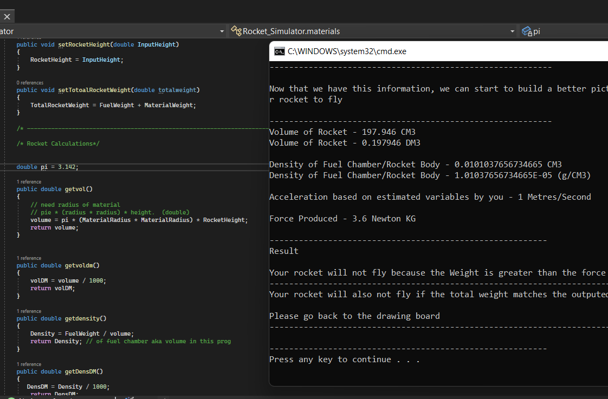

Welcome
Here you can find my latest projects and a description of what they do.
C# Rocket simulator
I have a great passion for space flight, so I decided to create an application that could calculate the rocket thrust equation, along with how far and long the space craft could fly depending on the fuel load etc.
In this program the user is able to choose a variety of materials and parameters. For example, if you had a rocket that was made out of steel, weighing 2KG and you wanted it to fly for x amount of time, it would be able to calculate what other variables you would need in order for it to take-off.
The above image is a snippet of a feature in the program. Please feel free to contact me if you have any queries regarding my program.
Simulated Mission Control sensor
This porject was a part of my Computer Architecture module. We had been given the opportunity to create any project we wanted with an Arduino kit; so I decided to create a very simple version of how a Mission Control centre would operate.
For this project, I had to assemble the hardware components and write the corresponding code for the hardware.
How does it work? (abort state)
- If there is an object within 20CM of the ultra sonic sensor, abort
- Print to the LCD to "abort mission!"
- Turn the LED red
- Turn the buzzer alarm on
How does it work? (lift-off state)
- If there is nothing within 20CM of the ultra sonic sensor, wait 5 seconds and lift-off
- Print to the LCD "lift-off"
- Turn the LED blue
- Turn the buzzer alarm off
The above image is a snippet of code in the program. Please feel free to contact me if you have any queries regarding my program.